Characters
Characters Places
Places Stories
Stories Species
Species Organizations
Organizations Glossary
Glossary Transportation
Transportation Monsters
Monsters Jobs
Jobs Summons
Summons Items
Items Magic/Skills
Magic/Skills Weapon Types
Weapon Types In-Crossovers
In-Crossovers Ex-Crossovers
Ex-Crossovers Release Dates
Release Dates Name Origins
Name Origins Famous Moments
Famous Moments Music Database
Music Database Features
Features Game Help
Game Help Game Evolution
Game Evolution Square Art
Square Art Fan Flash
Fan Flash Final Fantasy Forums
Final Fantasy Forums Updates
Updates Site Info
Site Info Feedback
Feedback Full Index
Full Index Links
Links Staff
StaffAbsolute Virtue
Final Fantasy 11
Absolute Virtue is a Notorius Monster in Final Fantasy XI,and is the hardest enemy in the game. In fact, he is so hard that people accused Square-Enix of making him invincible as a joke to waste the time of players. The accusation became so strong and so frequent that Square-Enix had to release a video with hints on how to defeat Absolute Virtue, but he still remains a difficult adversary to say the very least.
| 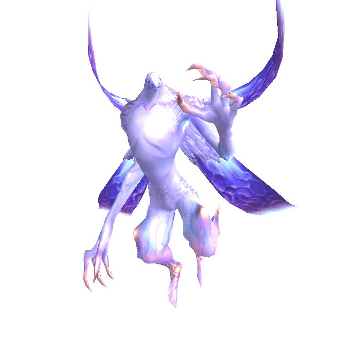 |
Brachioraidos
Final Fantasy 4 Advance
A dragon found only in the Lunar Ruins, Brachioraidos is one of the toughest enemies in the game and is found at a random location on the 50th floor.
| 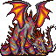 |
Chaos
Final Fantasy 1
This yellow-skinned demon is the final boss of FF1, formed when Garland merges with the power of the Four Fiends. He is the only boss monster not to merit his own music (but he did have a nifty disintegration sequence - well, nifty for NES). NOTE: Chaos is also the final limit break for Vincent (FF7).
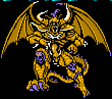 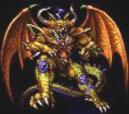  |
Chronodia
Final Fantasy 1 (PSP)
A bizzare amalgam of enemies from the game surrounding an orb of light, Chronodia is the last boss at the end of the Labyrinth of Time. Its strength is determined by the number of Blue Seals the player has collected, being stronger the greater this number is, resulting in a total of eight variations of the boss (which come from of the permutations of Red and Blue Seals).
| 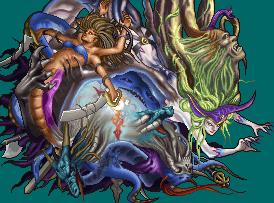 |
Cloud of Darkness
Final Fantasy 3
Fairly unimaginative final boss; basically evil in a bag. It has only a single attack, which it uses over and over.
| 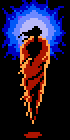 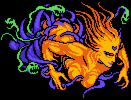 |
Dark King
Final Fantasy: Mystic Quest
The first real final boss who comes in several forms. He's a greenish man wearing a royal robe, but once you whittle him down he breaks out the firepower - first growing six arms, each carrying a weapon of destruction, and then turning into a giant spider. The super-secret trick? He's undead. Cure spells do tons of damage.
| 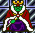 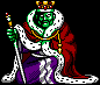 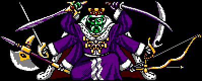 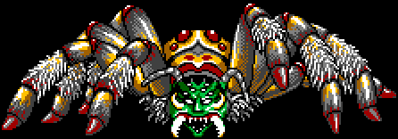 |
Eald'Narche
Final Fantasy 11
The final boss of the FF11 "Rise of the Zilart" expansion pack. Despite appearances, he is the older of the two Zilart princes. Experiments involving the mother crystal turned him into the form he is today. When Raogrimm reactivated the crystals, the two of them awoke, and they began their plans to open the gates of paradise. He is the real mastermind behind the crystal war, manipulating the Shadow Lord to bring about his wishes. He has four exoplates that protect him and must be destroyed before you can start attacking the big cheese. He mercilessly casts ancient magic like flood, flare, quake, tornado, etc.
| 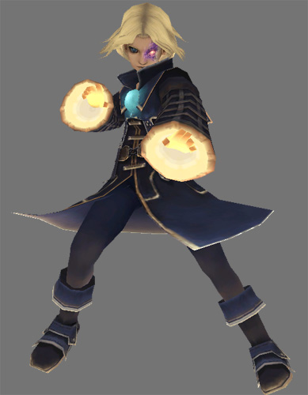 |
Elidibus
Final Fantasy Tactics
He lives in the tenth basement of the Deep Dungeon. He has his own Zodiac Stone and Lucavi alterego, and he employs Apandas as bodyguards. He uses several weird attacks, like Poison Frog, Midgar Zolom (mistranslated as Midgarswarm) and the ultimate summon spell, Zodiac. The hard part in beating him comes into play if you want your summoners to learn Zodiac; you have to make them survive the spell once. If you don't care, he's not that tough at all. When you beat him, you'll get the Serpentarius Zodiac Stone.
| 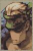 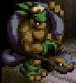 |
Emerald Weapon
Final Fantasy 7
This boss was only fightable in FF7 (NA) and the Japanese FF7 International. It lives underwater after Disc 1, just waiting for a fight. It has four eyes on his shoulders, each of which do some nasty damage. Its most devastating attack can instantly kill the entire party at once! Using Knights of the Round and Mimic materia can eventually kill it, after which a man in Kalm will give you a full set of Master Materia! (See also Ultima Weapon and Ruby Weapon.
| 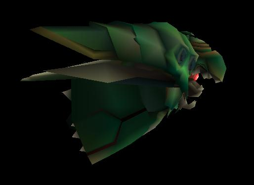 |
Griever
Final Fantasy 8
Ultimecia summons this GF as part of the final battle. Squall has a ring and a necklace featuring Griever, and Ultimecia calls it the "ultimate GF".
| 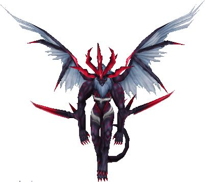 |
Braska's Final Aeon (Jecht)
Final Fantasy 10
As per the nature of the spiral of Sin, the party is forced to take down Braska's Final Aeon - Jecht. This guy is so huge you can't even see his bottom. You fight him in a dream-like Zanarkand on a platform. He attacks with a wide sword and two curative pagodas. Like all Aeons, this one has a very nasty Overdrive that hits more often than usual. He can take out many characters in one hit, or use a petrify/physcial attack combo that will eliminate that entire position from the battle (meaning you'll only have two spots to rotate someone in!). Aeons are effective, but he can wipe them out on his next turn. The Magus Sisters can take him down quickly.
| 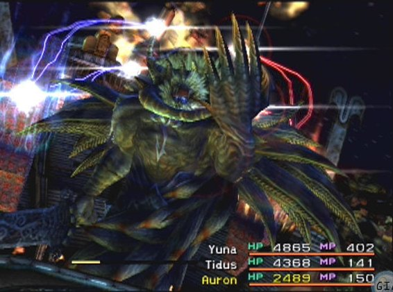 |
Kefka
Final Fantasy 6
One of the coolest final battles in the series while still clinging to some inkling of sanity. The four statues that compose the battle contain Lucifer/fallen angel references throughout; each statue has two to four individual targets with their own strengths and weaknesses. Kefka himself has grown angel wings and an ultra-cool music theme. His "Fallen One" spell reduces all HP to 1! See also FF6 Characters.
| 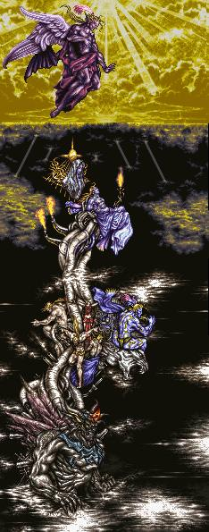 |
Final Fantasy, all games and animation bearing the Final Fantasy name, and all characters in said games or animation are copyright their respective creators, including but not limited to Squaresoft, Square Enix, Square EA, Tokyo TV, and ADV Films.